search: keywords: ['Studio', 'server', 'server management']
Server Management Panel
This is the section (available only for the Enterprise Edition) to work with OrientDB Server as DBA/DevOps. This control panel coming from OrientDB 2.1 Studio has been enriched with several new features for the new Enterprise Edition.
On the top of the page you can chose your server, visualize its system information and then navigate all statistics and facts related to it through the available tabs.
Overview
This panel summarizes all the most important information about the current cluster:
CPU,RAM,DISK CACHEandDISKusedStatusOperations per secondActive ConnectionsWarningsLive chartwith CRUD operations in real-time
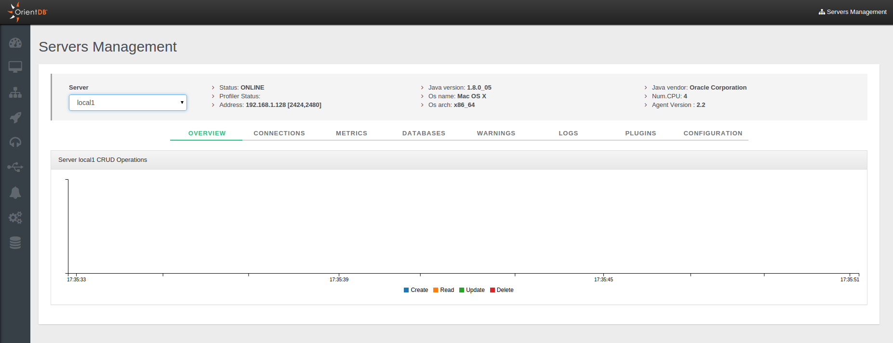
Connections
It displays all the active connections to the server. For each connection reports the following information:
Session ID, as the unique session numberClient, as the unique client numberAddress, is the connection sourceDatabase, the database name usedUser, the database userTotal Requests, as the total number of requests executed by the connectionCommand Info, as the running commandCommand Detail, as the detail about the running commandLast Command On, is the last time a request has been executedLast Command Info, is the informaton about last operation executedLast Command Detail, is the informaton about the details of last operation executedLast Execution Time, is the execution time o last requestTotal Working Time, is the total execution time taken by current connection so farConnected Since, is the date when the connection has been createdProtocol, is the protocol among HTTP and BinaryClient ID, a text representing the client connectionDriver, the driver nameCommands, a command button toInterruptorKilleach session.
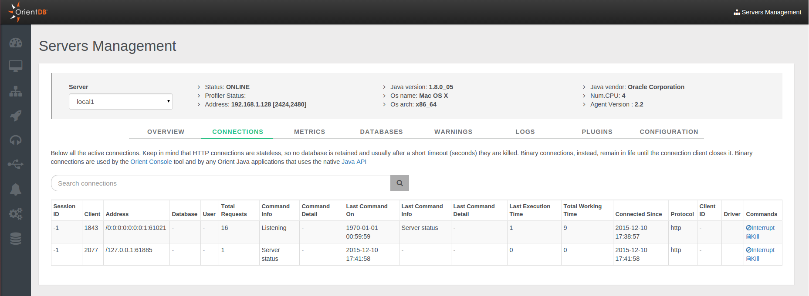
Metrics
This panel shows all the metrics in 4 different tabs. To learn more about the available metrics please refer to the Profiler section.
Chronos
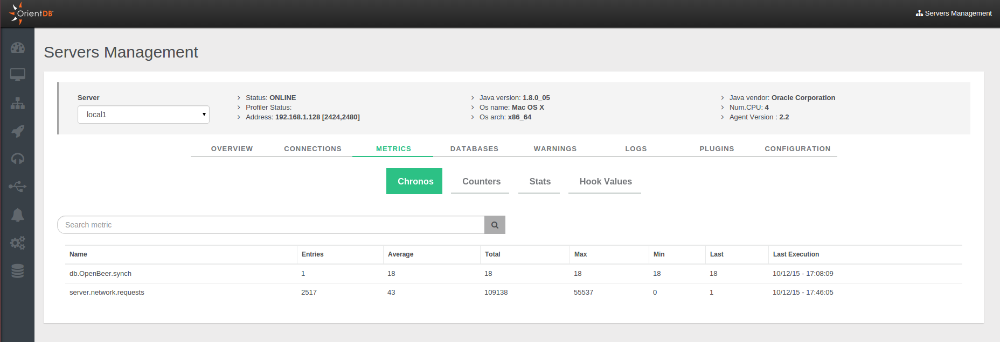
Counters
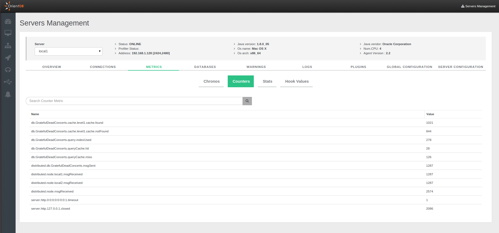
Stats
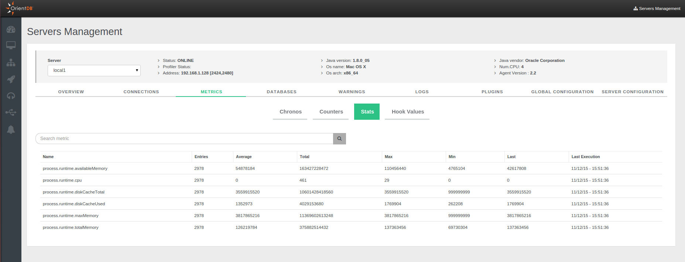
Hook Values
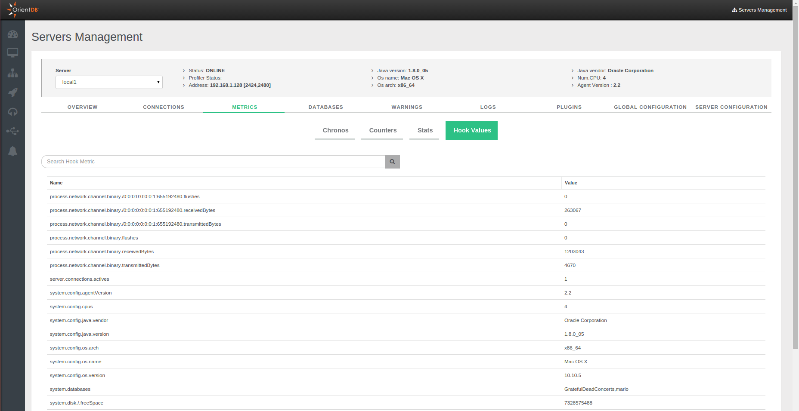
Databases
It lists all databases created on the server. It is possible make a backup using the specific option.
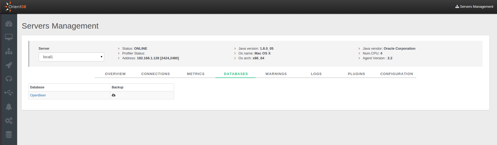
Warnings
It list all warning messages. For each you can see:
Warning, as the warning messageCount, as the number of that warningsLast Time, as the timestamp of the last warning message
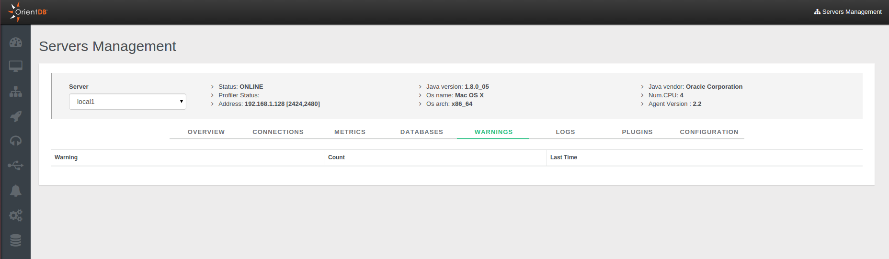
Logs
This panel shows all the logs present on the server. The information in each log row are presented divided as follows:
DayHourTypeFileInfo
Moreover you can filter log messages through the specific panel, typing different parameters.
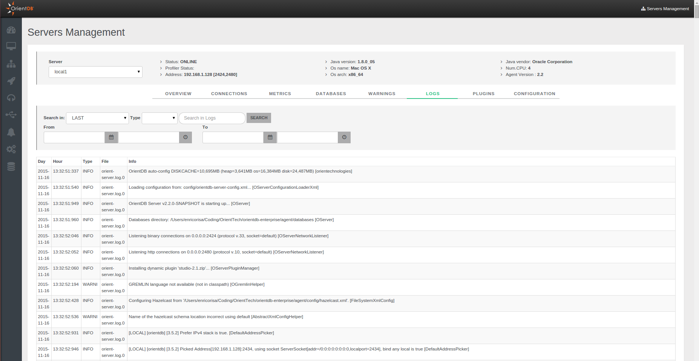
Plugins
It helps you with the configuration of a new plugin, avoiding to edit the config/orientdb-server-config.xml configuration file.
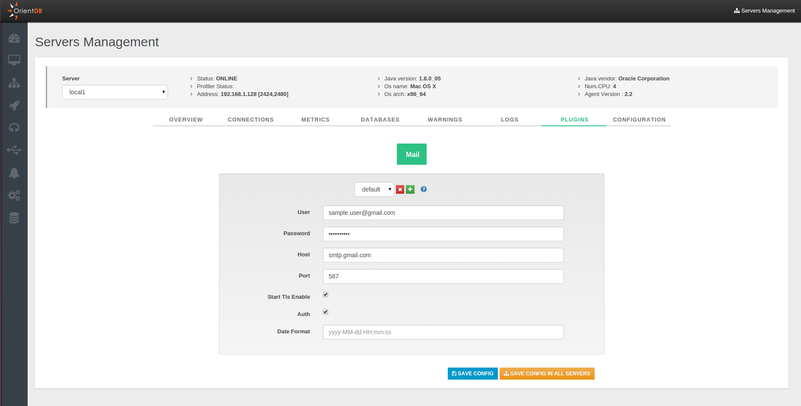
Configuration
You can consult in read-only mode the configuration of the server contained in the config/orientdb-server-config.xml file.
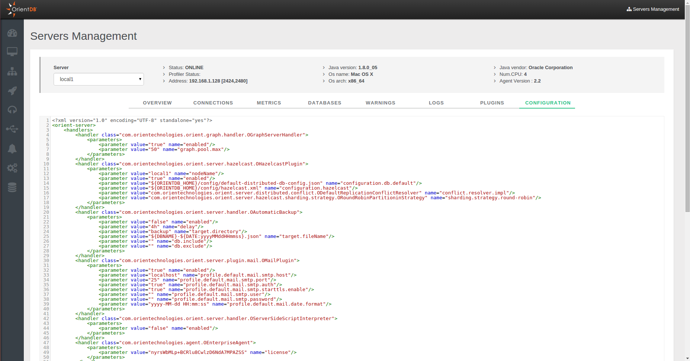